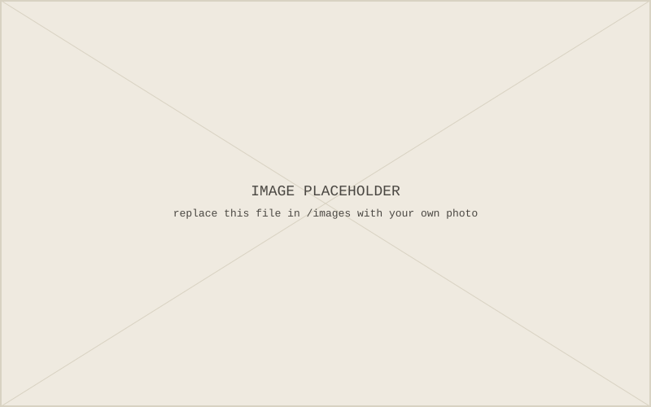

[One or two sentences setting up what this entry covers.]
[Body paragraph. Summarize the chapter's argument and examples in your own words. Add as many paragraphs as you need — just copy this block.]
[Another paragraph.]
A Section Heading
[Use headings to break the entry into sections if it runs long.]

[More body text.]
"Replace with a real quote from the book." [Author], [Book Title], p. [page]
Why This Matters
[Close by connecting back to your project's overall thesis, or previewing the next entry.]